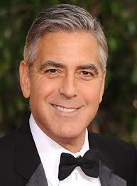
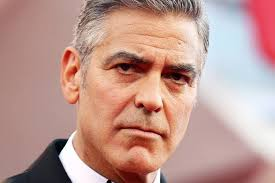
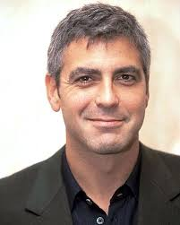

George Clooney

Biografia
George Timothy Clooney (Lexington, 6 de maio de 1961) é um ator, produtor, roteirista, diretor de cinema e televisão, empresário e filantropo norte-americano. Ele é vencedor de quatro Globo de Ouro, três SAG Awards e dois Oscars. Clooney recebeu o Oscar de Melhor Ator Coadjuvante por seu papel em Syriana em 2006 e também ganhou um Oscar como produtor do filme Argo em 2012. Nesse mesmo ano, ele se tornou a segunda pessoa a ser indicada em seis categorias diferentes da premiação: Melhor Filme, Melhor Diretor, Melhor Roteiro Original, Melhor Roteiro Adaptado, Melhor Ator e Melhor Ator Coadjuvante. Esse feito foi repetido apenas por Walt Disney e seguido por Alfonso Cuarón.
Além disso, Clooney compartilha com Brad Pitt o título de únicos vencedores do Oscar de Melhor Ator Coadjuvante e Filme. Seu trabalho humanitário também é notável: em 2010, ele recebeu o Bob Hope Humanitarian Award do Emmy por seus esforços em arrecadar dinheiro para o Haiti. Em 2013, foi homenageado com o BAFTA por conjunto da obra e, em 2015, recebeu o Cecil B. DeMille Award do Globo de Ouro. Em 2017, ele ganhou o prêmio honorário do Cesar Award e, em 2018, recebeu o AFI Lifetime Achievement Award por sua carreira.
Clooney começou sua carreira na televisão em 1978 e ganhou reconhecimento no drama médico ER, no qual atuou de 1994 a 1999. Durante esse período, ele também recebeu duas indicações ao Emmy. Enquanto trabalhava na série, Clooney atraiu diversos convites para papéis principais em filmes. Em 1996, estrelou Um Drink do Inferno e, em 1998, Irresistível Paixão, dirigido por Steven Soderbergh, com quem Clooney colaborou em várias outras produções
Útimos trabalhos:
- “The Boys in the Boat” (2023): Neste filme, Clooney atua como diretor. A obra recebeu uma nota média de 3,0
- “Bar, Doce Lar” (2021): Mais uma vez, Clooney assume o papel de diretor. O filme obteve uma avaliação de 3,6
- “O Céu da Meia-Noite” (2020): Além de dirigir, Clooney também atua como ator neste longa. No entanto, a produção recebeu uma nota mais baixa, com 2,4.

Pontos fracos:
- Compromisso com projetos arriscados: Clooney, às vezes, se envolve em projetos cinematográficos que não são bem recebidos pela crítica ou pelo público. Por exemplo, o filme Tomorrowland (2015) não foi tão bem-sucedido quanto ele esperava1. Isso demonstra que sua disposição para assumir riscos pode ser um ponto fraco.
- Perfeccionismo: Como diretor, Clooney é conhecido por ser meticuloso e perfeccionista em relação aos detalhes de suas produções. Embora isso possa resultar em filmes bem executados, também pode ser um desafio, pois pode prolongar o processo de filmagem e edição.
- Vida pessoal sob os holofotes: Sendo uma figura pública, Clooney enfrenta constantemente a atenção da mídia e a invasão de sua privacidade. Isso pode ser desgastante e afetar sua vida pessoal e emocional

Pontos fortes:
- Carisma e Presença na Tela: Clooney possui uma presença magnética no cinema e na televisão. Seu carisma natural e habilidade de cativar o público são evidentes em seus papéis icônicos. Ele consegue transmitir emoções sutis e complexas com facilidade.
- Talento como Diretor: Além de atuar, Clooney também é um cineasta talentoso. Seus filmes como diretor demonstram uma visão artística única e habilidade para contar histórias envolventes. Ele é meticuloso na escolha dos projetos e na direção das cenas.
- Engajamento Humanitário: Clooney usa sua fama e influência para causas humanitárias e sociais. Seu trabalho em arrecadar fundos para o Haiti e seu ativismo em questões como direitos humanos e justiça social mostram seu compromisso em fazer a diferença no mundo.